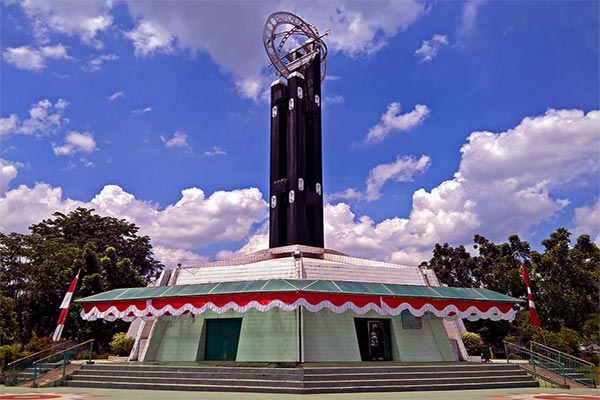
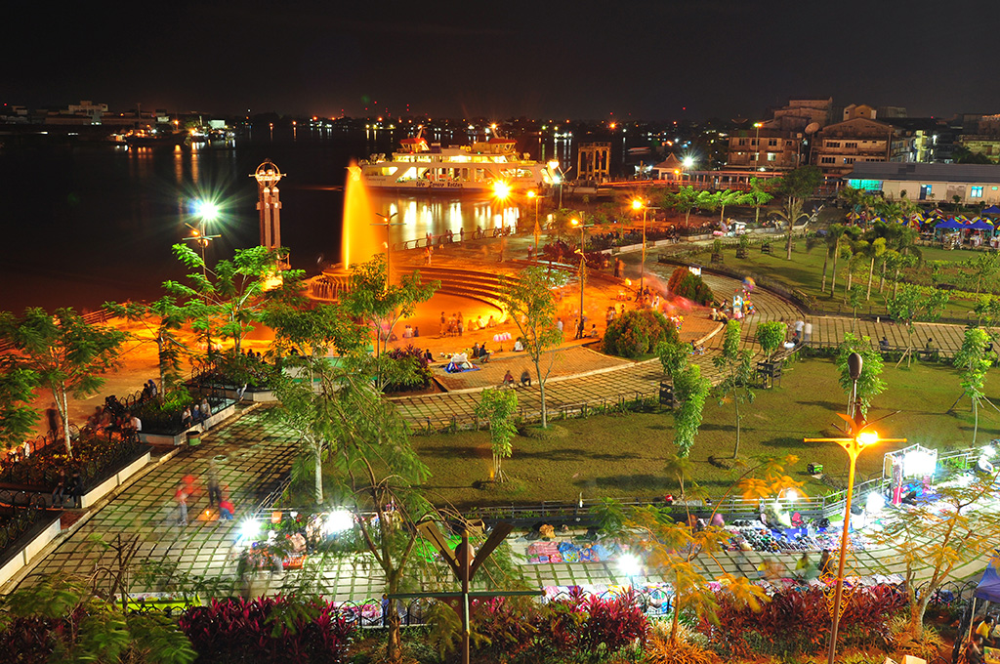
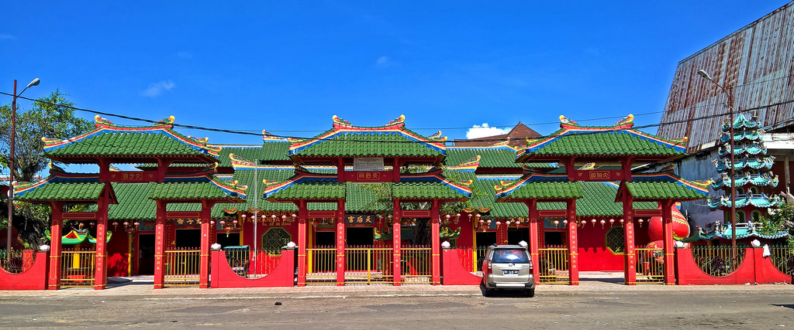

Tugu Khatulistiwa

Sejarah mengenai pembangunan tugu ini terdapat di dalam gedung yang menyebutkan bahwa:
Berdasarkan catatan yang diperoleh pada tahun 1941 dari V. en. W oleh Opzichter Wiese dikutip dari Bijdragen tot de geographie dari Chef Van den topographischen dienst in Nederlandsch- Indië: Den 31 sten Maart 1928 telah datang di Pontianak satu ekspedisi Internasional yang dipimpin oleh seorang ahli Geografi berkebangsaan Belanda untuk menentukan titik/tonggak garis equator di kota Pontianak
Berikut adalah detil konstruksi Tugu Khatulistiwa:
Bangunan tugu terdiri dari 4 buah tonggak kayu belian (kayu besi), masing-masing berdiameter 0,30 meter, dengan ketinggian tonggak bagian depan sebanyak dua buah setinggi 3,05 meter dan tonggak bagian belakang tempat lingkaran dan anak
panah penunjuk arah setinggi 4,40 meter.
Diameter lingkaran yang ditengahnya terdapat tulisan EVENAAR (bahasa Belanda yang berarti Equator) sepanjang 2,11 meter.
Panjang penunjuk arah 2,15 meter. Tulisan plat di bawah
anak panah tertera 109o 20' OLvGr menunjukkan letak berdirinya tugu khatulistiwa pada garis Bujur Timur.
Sumber: https://id.wikipedia.org/wiki/Tugu_Khatulistiwa
Keraton Kadariah

Keraton Kadariah adalah istana Kesultanan Pontianak yang dibangun pada tahun 1771M dan selesai pada tahun 1778M. Tak lama setelah Keraton selesai dibangun, Sayyid Syarif Abdurrahman Al-qadrie dinobatkan sebagai sultan pertama Kesultanan
Pontianak.
Dalam perkembangannya, keraton ini terus mengalami proses renovasi dan rekonstruksi hingga menjadi bentuk yang sekarang ini.
Sumber: https://id.wikipedia.org/wiki/Keraton_Kadariah.
Taman Alun Kapuas

Taman Alun Kapuas merupakan salah satu lokasi wisata di kota Pontianak Provinsi Kalimantan Barat. Tata letaknya di tengah kota menjadikan Taman Alun Kapuas bisa dikunjungi dari arah mana saja, maka wajar saja jika hampir setiap harinya
lokasi ini ramai dikunjungi oleh masyarakat yang datang bersama keluarga dan sesekali tampak wisatawan asing datang ke tempat ini.
Taman yang merupakan salah satu proyek ‘Waterfront City’ dari Pemerintah Kota Pontianak, dan sering disebut dengan nama Taman Alun-alun Kapuas itu sendiri terletak di Pinggiran Sungai Kapuas, Pontianak.
Taman Alun-Alun Kapuas ini memiliki bentuk dan dekorasi yang amat tertata rapi, sehingga tempat ini sering menjadi sarana refresing bagi beberapa kalangan masyarakat umum kota Pontianak, apalagi di tambah dengan adanya air mancur yang
sangat indah, dengan dikelilingi anak-anak tangga taman alun-alun Kapuas serta ditambah dengan replika Tugu Khatulistiwa yang menjadi kebanggaan masyarakat Provinsi Kalimantan barat ini.
Sumber: https://id.wikipedia.org/wiki/Taman_Alun_Kapuas
Vihara Bodhisatva Karaniya Metta

Vihara Bodhisatva Karaniya Metta atau yang dulunya dikenal sebagai Kelenteng Tiga Dewa Dewi (Sa Sin Keng) ini didirikan pada tahun 1906. Menurut pengurus, sebelum Kelenteng Tiga Dewa Dewi dibangun, yakni: Kelenteng Dewi Samudera (Macou);
dan Kelenteng Putera Naga (Tai Ce Ya) atau (Kelenteng Dewa Naca) masih berada di Jalan Teng Seng Hie; lalu ada Kam Tian Tai Tie (Tua Pek Kong) berada di Parit Pekong.
Kemudian pada tahun 1983 dibentuk yayakan yang kemudian diberi nama Vihara Bodhisatva Karaniya Metta.
Total telah dilakukan 4 kali renovasi sejak Vihara ini pertama kali dibangun, salah satunya penggantian penggunaan lantai kayu menjadi keramik dan dinding yang masih berbahan kayu diganti semen dengan ukiran timbul.
Sumber: https://pariwisataindonesia.id/headlines/sekelumit-sejarah-vihara-bodhisatva-karaniya-metta-di-pontianak/
Rumah Betang Radakng

Rumah Radakng merupakan rumah panjang yang menjadi rumah adat bagi Suku Dayak yang berada di Provinsi Kalimantan Barat. Ini merupakan rumah adat terbesar yang ada di Indonesia dan menjadi sebuah landmark bagi kota Pontianak setelah Tugu
Khatulistiwa. Rumah Radakng memiliki ukuran panjang 138 meter dengan tinggi 7 meter. Lokasinya berada di Jalan Sutan Syahrir Kota Baru Pontianak.
Letaknya yang berada di Komplek Perkampungan Budaya di Jalan Sutan Syahrir Kota Baru Pontianak menjadikan rumah radakng sebagai ikon baru kota Pontianak setelah Tugu Khatulistiwa. Rumah adat raksasa tersebut telah diresmikan oleh Gubernur
Kalimantan Barat, pada tahun 2013 silam. Dalam peresmiannya tersebut disampaikan bahwa rumah adat yang menjadi kebanggaan Provinsi Kalimantan Barat bisa digunakan untuk pengembangan dan pelestarian adat istiadat serta sebagai ikon
pariwisata di Kalimantan Barat. Dengan demikian, kehadiran rumah radakng ini memberikan arti positif bagi pengembangan pariwisata di Pontianak dan juga Kalimantan Barat secara umum.
Pemanfaatannya bisa untuk kegiatan seni dan budaya yang tentunya akan menarik wisatawan untuk terus berkunjung. Para wisatawan yang berkunjung, nantinya akan disiapkan berbagai macam suvenir yang berupa miniatur dari rumah adat tersebut.
Rumah adat ini mampu menampung 600 orang di ruang utamanya.
Sumber: http://bappeda.pontianakkota.go.id/pesona/objek-wisata/rumah-radakng